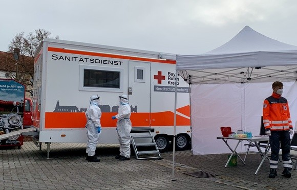

Auch die Corona Pandemie ging nicht spurlos an der ehrenamtlichen Arbeit vor. Das Aufgabenfeld änderte sich von Sanitätsdienst hin zu Teststellen.
Eine breite Durchführung von Schnelltests ist eines der wichtigsten Werkzeuge in der Bekämpfung der Corona-Pandemie. Bei uns ist es möglich, einmal
pro Woche einen kostenlosen Schnelltest durchführen zu lassen.

Das Angebot richtet sich an die gesamte Bevölkerung in der Stadt Amberg und dem Landkreis
Amberg-Sulzbach und an jede Person mit einem Mindestalter von 18 Jahren. Personen unter 18 Jahren können mit einer Einverständniserklärung oder im Beisein einer
sorgeberechtigten Person getestet werden.
Nach dem Test erhalten Sie ein Zertifikat mit dem Testergebnis ausgehändigt. Dieses Zertifikat eignet sich für das Einkaufen, den Friseurbesuch, den Besuch eines
Bewohners im Altenheim und allen weiteren Stellen die einen Negativen-Schnelltests erfordern.